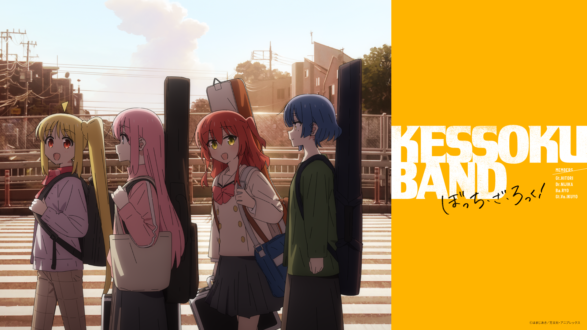

後藤一里
結束樂團 : 吉他手
伊地知虹夏
結束樂團 : 鼓手
喜多郁代
結束樂團 : 主唱

山田涼
結束樂團 : 貝斯手
介紹幾首OP 與 ED
完整版都在音樂撥放器
右上角的音樂撥放/暫停可以撥放/暫停背景音樂

歌曲介紹 青春コンプレックス
seisyun complex

OP曲
這首歌曲 歌詞描述著主角害怕與人接觸
但又想與他人產生聯繫的矛盾
開場 連續三下的吉他低音
用來描繪主角害怕與他人接觸的陰沉個性
後續持續著陰暗沉重的節拍 與 背景的小鼓聲組合
也同時是暗指 代表主角的吉他 與
樂團鼓手兼組織者的第一次接觸
間奏 貝斯跑了進來
這時歌曲及吉他的節奏變的輕快許多
暗指 主角接觸到樂團後心境的轉變
中場 連續四下的吉他節拍後 節奏吉他默默地出現在背景
意旨 負責旋律吉他的第四位主角終於到場
在第四位主角到場後 歌曲的節奏再次發生變化
歌曲的節奏變得更快 也更多變化 難以預測
暗指 主角心境變得更加開放 也更加喜悅
又暗指 主角的未來將會產生難以預測的變化
青春コンプレックス

加個p 字打在這裡 換行用br
なにが悪い

Distortion!!